Googleアシスタントのデベロッパープラットフォームでは、スマートスピーカー、電話、自動車、テレビ、ヘッドフォンなどの10億台を超えるデバイスに向けて、仮想のパーソナルアシスタントであるGoogleアシスタントの機能を拡張するソフトウェアを作成できます。 ユーザーはアシスタントと会話を交わして、食料品の購入や配車の予約などを行うことができるようになります。開発者としてあなたは、アシスタント開発者プラットフォームを使用して、ユーザーと独自のサードパーティのフルフィルメントサービスとの間の楽しく効果的な会話体験を簡単に作成および管理することができます。
このコードラボでは、Googleアシスタントにて開発するための初心者レベルの概念について説明します。 それを完了するために、プラットフォームに関する事前の経験は必要ありません。 このコードラボでは、神秘的なグリフィンバーグの土地で冒険を始めるときにユーザーに運勢を知らせるGoogleアシスタントのシンプルなアクションを作成します。Actions BuilderコードラボのLevel 2では、このアクションをさらに拡張して、ユーザーの入力に基づいてユーザーの運勢をカスタマイズします。
このコードラボでは、以下の機能を持つシンプルなアクションを構築します:
このコードラボを完了した後の完成したアクションは、次の会話フローになります。
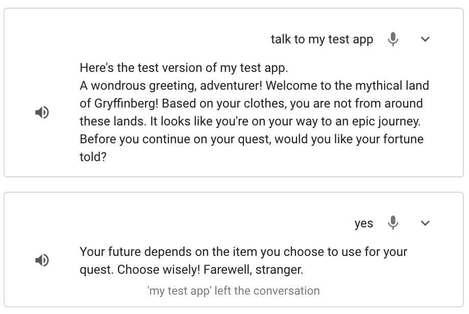
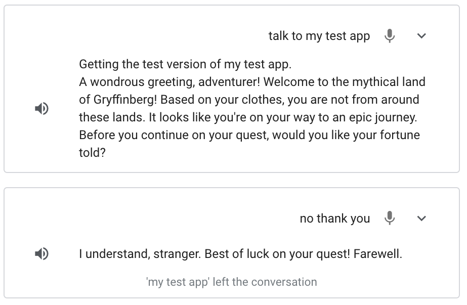
あなたの環境に以下のツールが必要です:
次のセクションでは、開発環境をセットアップして、アクションプロジェクトを作成する方法について説明します。
このコードラボで構築するアクションをテストするには、必要な権限を有効にして、シミュレーターがアクションにアクセスできるようにする必要があります。権限を有効にするには、次の手順に従います。
アクションプロジェクトは、アクションのコンテナです。 このコードラボ用のアクションプロジェクトを作成するには、次の手順に従ってください:
actions-codelab のように Project name に入力します（この名前は内部で参照されます。後で、プロジェクトの外部向けの名前を設定することができます。）。ユーザーは invocation（呼び出し） を通じてアクションとの会話を開始します。 たとえば、MovieTime という名前のアクションがある場合、ユーザーは "Ok Google, talk to MovieTime" というようなフレーズを言ってアクションを呼び出すことができます。MovieTime は display name です。 本番環境にデプロイする場合、アクションにはdisplay nameが必要です。 ただし、アクションをテストするために、display nameを定義する必要はありません。 代わりに、シミュレータで "Talk to my test app" というフレーズを使用してアクションを呼び出すことができます。
また、main invocation を編集して、ユーザーがアクションを呼び出した後の動作を定義する必要があります。
デフォルトでは、Actions Builderはinvocationがトリガーされたときに一般的なプロンプトを提供します("Start building your Action by defining main invocation.")。
次のセクションでは、アクションコンソールでmain invocationのプロンプトをカスタマイズします。
ユーザーがアクションを呼び出したときにアクションがユーザーに返すプロンプトを変更するには、次の手順に従ってください:
speech フィールドのテキスト（Start building your action...）を次のウェルカムメッセージに置き換えます: A wondrous greeting, adventurer! Welcome to the mythical land of Gryffinberg! Based on your clothes, you are not from around these lands. It looks like you're on your way to an epic journey.アクションコンソールには、シミュレータと呼ばれるアクションをテストするためのWebツールが用意されています。 インターフェイスはハードウェアデバイスとその設定をシミュレートするため、スマートディスプレイ、電話、スピーカー、またはKaiOSで実行されているかのようにアクションと対話できます。
アクションを呼び出すと、追加したカスタマイズされたプロンプト("A wondrous greeting, adventurer!...")で応答するようになります。
シミュレータでアクションのmain invocationをテストするには、以下の手順に従ってください:
Talk to my test app と入力して Enter キーを押します。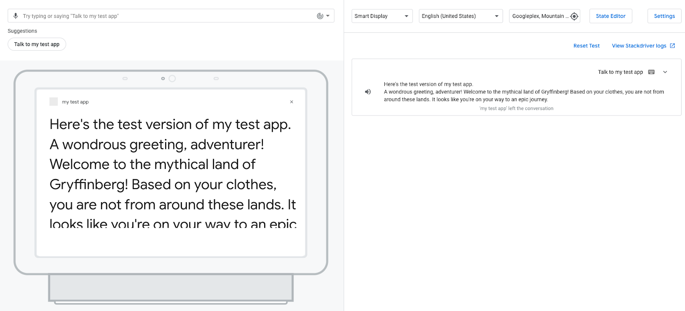
アクションの main invocation をトリガーすると、アシスタントはカスタマイズされたウェルカムメッセージで応答します。 今の段階では、アシスタントが挨拶で応答した後、会話は終了します。 次のセクションでは、会話が続くようにアクションを変更します。
Test タブでは、右側のパネルにイベントログが表示され、会話履歴がイベントログとして表示されます。 各イベントログには、その会話のターン中に発生したイベントが表示されます。
アクションには現在、1つのイベントログがあり、ユーザーの入力 ( "Talk to my test app" ) とアクションの応答の両方が表示されます。 次のスクリーンショットは、アクションのイベントログを示しています:
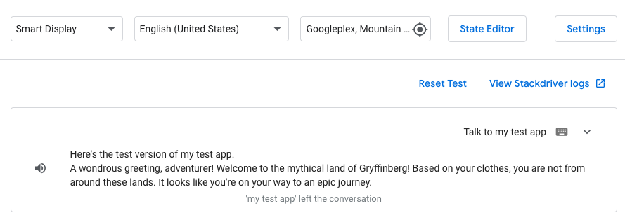
イベントログの下向き矢印をクリックすると、発生したイベントが時系列で表示されます:
userInput: ユーザーの入力値 ( "Talk to my test app" ).interactionMatch: ユーザーの入力によってトリガーされたアクションの main invocation の応答。 矢印をクリックしてこの行を展開すると、main invocation 用に追加したプロンプトが表示されます (A wondrous greeting, adventurer!...)endConversation: 現在の会話を終了する Main invocation インテントで選択されたトランジションに対応します。 （トランジションについては、このコードラボの次のセクションで詳しく説明します）イベントログは、アクションの動作を可視化し、問題が発生した場合にアクションをデバッグするのに役立つツールです。 イベントの詳細を表示するには、次のスクリーンショットに示すように、イベント名の横にある矢印をクリックします:
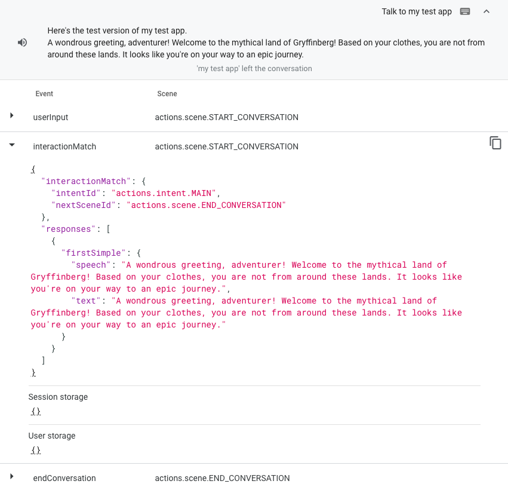
現時点で、ユーザーがアクションを呼び出した後の動作が定義されましたので、アクションの会話の残りを構築できるようになりました。 このコードラボを続ける前に、次の用語を理解して、アクションの会話がどのように機能するかを理解しましょう:
アクションには1つ以上のシーンを含めることができ、実行する前に各シーンをアクティブにする必要があります。 （このコードラボで作成するアクションには、 Start というタイトルのシーンが1つだけあります。）シーンをアクティブ化する最も一般的な方法は、ユーザーがシーン内のユーザーインテントに一致したときに、そのインテントが別のシーンへの遷移をトリガーしてそれをアクティブにするようにアクションを構成することです。
たとえば、動物の実態をユーザーに提供する架空のアクションを想像してみてください。 ユーザーがこのアクションを呼び出すと、 Main invocation インテントが照合され、Factsという名前のシーンへの遷移がトリガーされます。 この遷移により、Factsシーンがアクティブになり、次のプロンプトがユーザーに送信されます: 猫または犬についての情報を聞きたいですか？ Factsシーン内には、Catと呼ばれるカスタムインテントがあります。これには、「猫の実態を聞きたい」や「猫」など、猫の実態を聞くためにユーザーが言うトレーニングフレーズが含まれています。 ユーザーが猫の実態を聞くように要求すると、猫のインテントが一致し、Cat factと呼ばれるシーンへの遷移がトリガーされます。 Cat factシーンがアクティブになり、猫の実態を含むプロンプトがユーザーに送信されます。
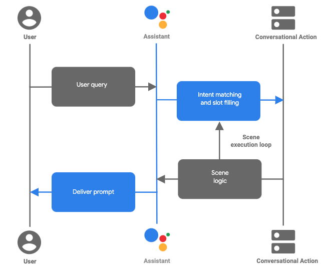
図1. Actions Builderで作成されたアクションの典型的な会話型ターンのフロー
シーン、インテント、トランジションが一緒になって会話のロジックを構成し、ユーザーがアクションの会話をたどるさまざまなパスを定義します。 次のセクションでは、シーンを作成し、ユーザーがアクションを呼び出した後にそのシーンをアクティブ化する方法を定義します。
このセクションでは、 Start と呼ばれる新しいシーンを作成します。これは、運勢を告げるかどうかを尋ねるプロンプトをユーザーに送信します。 また、main invocation から新しい Start シーンへの遷移を追加します。
このシーンを作成してトランジションを追加するには、次の手順に従ってください:
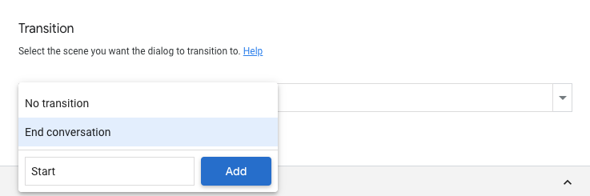
Start と呼ばれるシーンが作成され、アクションがユーザーにウェルカムプロンプトを配信した後、アクションに Start シーンに遷移するよう指示されます。Start シーンを表示します。Start シーンの On enter セクションで + をクリックします。speech フィールドの文 (Enter the response that users will see or hear...) をユーザーに尋ねる質問に置き換えます: Before you continue on your quest, would you like your fortune told?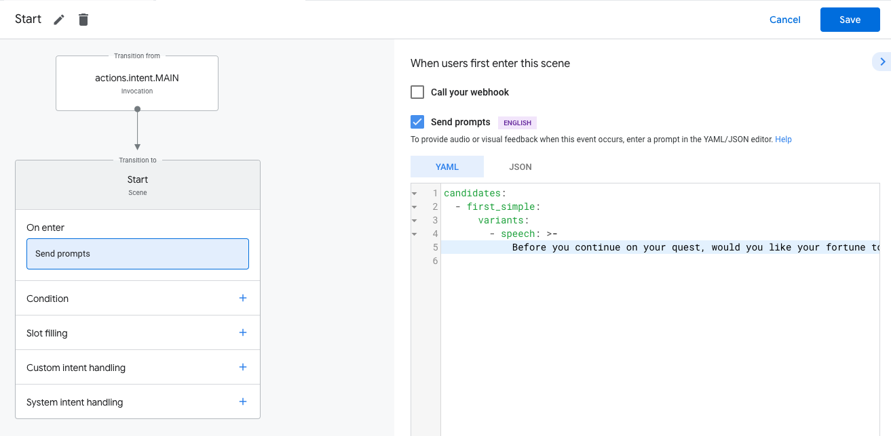
Googleアシスタントは、ユーザーがスタートシーンに入ったときに、このプロンプト (Before you continue on your quest...) をユーザーに提供します。
サジェストチップは、アクションがユーザー入力として処理するユーザーにクリック可能な候補を提供します。 このセクションでは、画面を備えたデバイスのユーザーをサポートするために、構成したばかりのプロンプトの下に表示されるサジェストチップを追加します (Before you continue on your quest, would you like your fortune told?) 。
Start シーンのプロンプトにサジェストチップを追加するには、次の手順に従います:
Start シーンで、コードエディターの下にある suggestions をクリックします。 このアクションにより、単一のサジェストチップが追加されます。title フィールドで、 Suggested Response を 'Yes'に置き換えます。'No'というタイトルのサジェストチップを手動で追加します。 コードは次のスニペットのようになります: suggestions:
- title: 'Yes'
- title: 'No'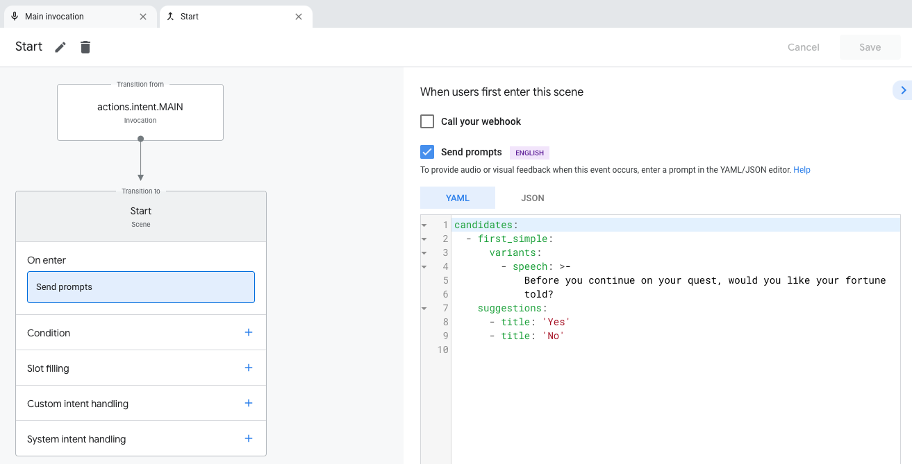
この時点で、アクションは main invocation から Start シーンに移行し、運勢を伝えたいかどうかをユーザーに尋るようになります。 サジェストチップもシミュレーション表示に表示されます。
シミュレータでアクションをテストするには、次の手順に従ってください:
Talk to my test app と入力します。 次に、Enter キーを押します。 アクションは、 Main invocation プロンプトと追加された Start シーンプロンプトで "Before you continue on your quest, would you like your fortune told?" とレスポンスされるはずです。次のスクリーンショットは、このインタラクションを示しています:
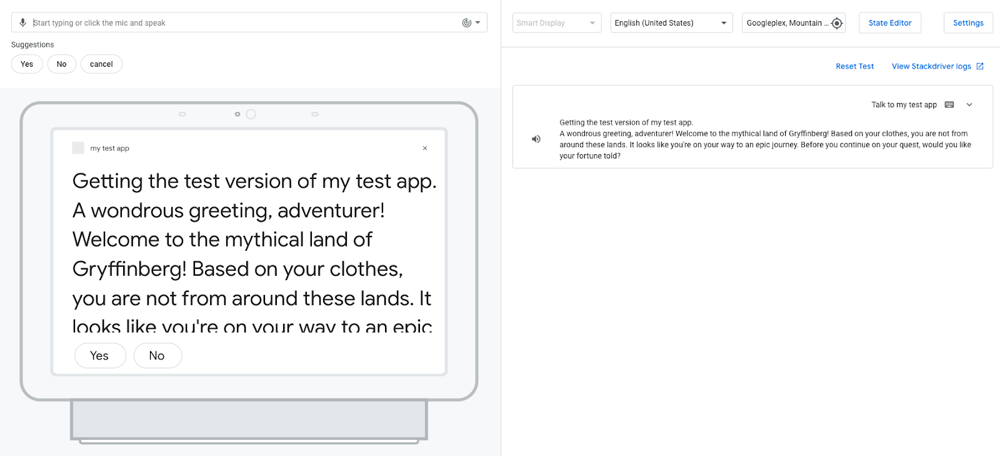
Yes または No のサジェストチップをクリックして、プロンプトに応答します。 （"Yes" または "No" と言うか、Input フィールドに "Yes" または "No" と入力することができます。）プロンプトに応答すると、アクションは、入力を理解できないことを示すメッセージで応答します: "Sorry, I didn't catch that. Can you try again?"
"Yes" または "No" の入力を理解して応答するようにアクションをまだ設定していないため、アクションは入力を NO_MATCH インテントに一致させます。
デフォルトでは、 NO_MATCH システムインテントはデフォルトの応答を提供しますが、これらの応答をカスタマイズして、入力を理解していないことをユーザーに示すことができます。 また、アシスタントは、ユーザーの入力と3回一致しないと、ユーザーのアクションとの会話を終了します。
yes と no インテントを追加するアクションが提起する質問にユーザーが応答できるようになったので、ユーザーの応答を理解するようにアクションを構成できます ("Yes" または "No")。 次のセクションでは、ユーザーが "Yes" または "No" と言ったときに一致するカスタムインテントを作成し、これらのインテントを Start シーンに追加します。
yes インテントを作成するには、次の手順に従ってください:
yes と名前を付け、 Enter キーを押します。yes インテントをクリックして、 yes インテントページを開きます。YesYI wouldTell me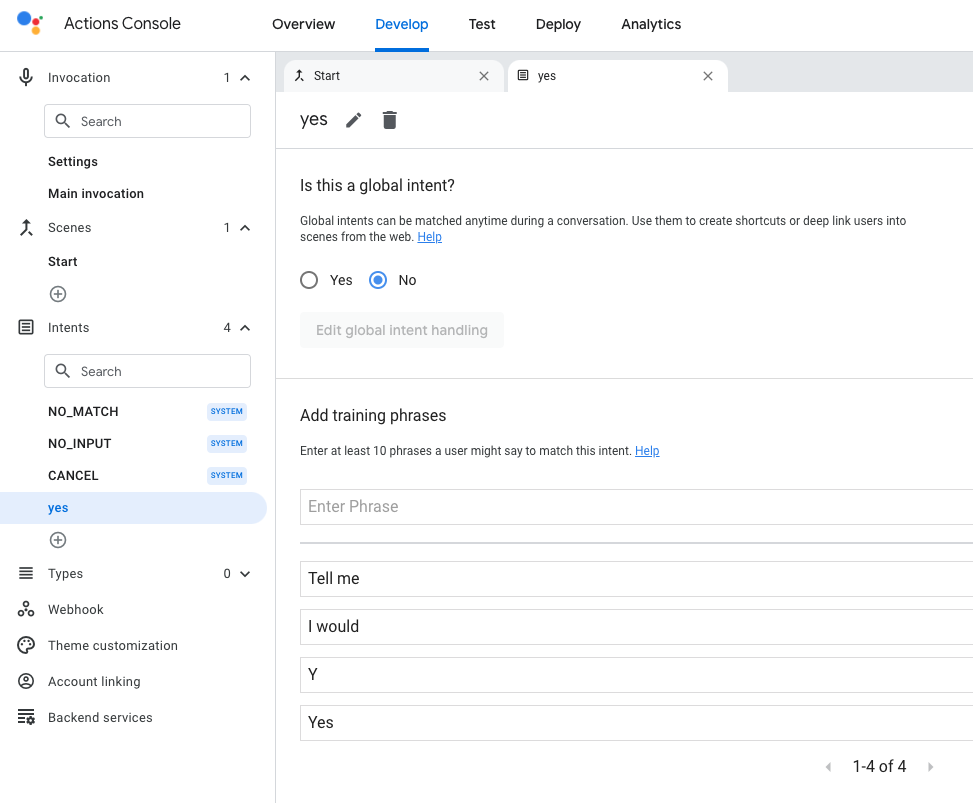
yes インテントを Start シーンに追加するこれで、アクションは、ユーザーが "yes" の意図を表明していることを理解できます。 ユーザーが Start プロンプト ("Before you continue on your quest, would you like your fortune told?") に応答しているため、yes カスタムインテントを Start シーンに追加できます。
このカスタムインテントを Start シーンに追加するには、次の手順に従ってください:
Start シーンで + (プラスマーク) をクリックします。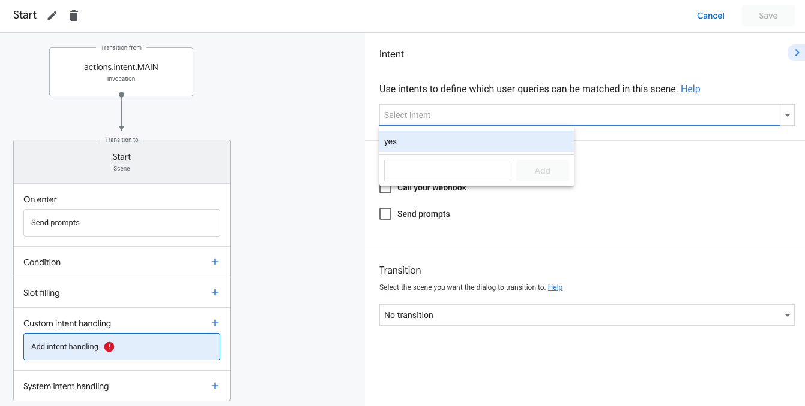
speech フィールドを次のテキストで更新します: Your future depends on the aid you choose to use for your quest. Choose wisely! Farewell, stranger.エディターのコードは次のスニペットのようになります:
candidates:
- first_simple:
variants:
- speech: >-
Your future depends on the aid you choose to use for your quest. Choose
wisely! Farewell, stranger.yes インテントをテストするこの時点で、アクションはユーザーが運勢を聞きたいときを理解し、適切な応答を返します。
シミュレーターでこのインテントをテストするには、次の手順に従ってください:
Talk to my test app と入力して Enter キーを押します。Yes と入力し、Enter キーを押します。 または、 Yes サジェストチップをクリックします。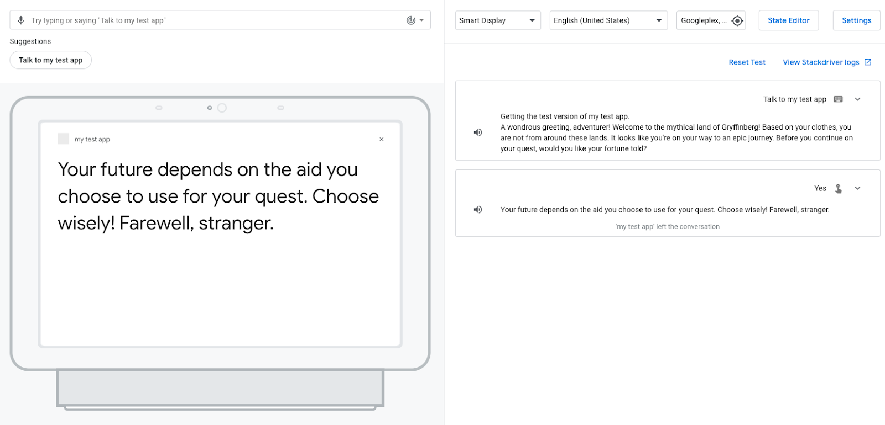
あなたのアクションはユーザーに応答し、彼らの運命は彼らが選択した援助に依存することを伝えます。 yes インテントに End conversation 遷移を選択したため、アクションはセッションを終了します。
no インテントを作成するここで、ユーザが占いを聞きたくないときを理解しそれに反応するための no インテントを作成する必要があります。このインテントを作成するために、以下の手順に従います:
no と名付けて、Enter を押します。no インテントのページを開くために、no をクリックします。NoNI don't wantnope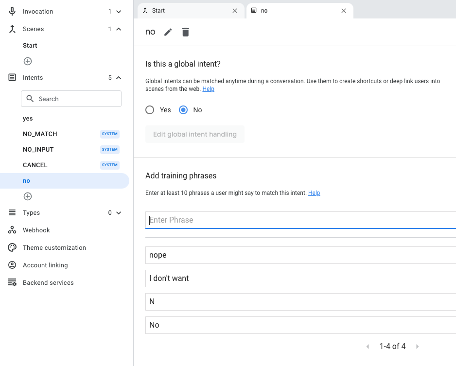
Start シーンに no インテントを追加するここまでで、アクションは、ユーザーが "no" または "nope" のような "no" に類似した何かを表現しているときを理解できます。 ユーザーは Start プロンプトに応答しているため、「カスタム」インテントを Start シーンに追加する必要があります（"Before you continue on your quest, would you like your fortune told?"）。
Start シーンにこのインテントを追加するために、以下の手順に従います:
Start シーンにて、+ (プラス記号) をクリックします。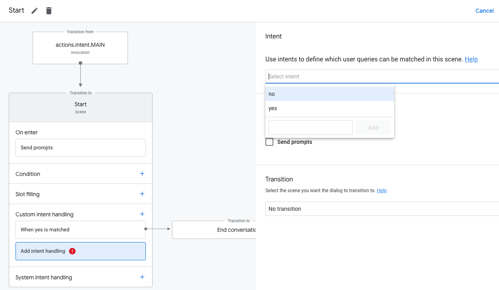
speech フィールドを置き換えます: I understand, stranger. Best of luck on your quest! Farewell.エディタのコードは、以下のスニペットのように見えるはずです:
candidates:
- first_simple:
variants:
- speech: >-
I understand, stranger. Best of luck on your quest! Farewell.no インテントをテストするこの時点で、アクションはユーザーが運勢を聞きたくない場合を理解し、適切な応答を返します。
このインテントをシミュレータでテストするには、次の手順に従います:
Talk to my test app と入力して、Enter を押します。No と入力して Enter を押します。または、No サジェスチョンチップをクリックします。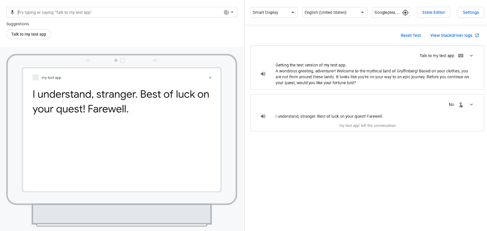
ユーザーに幸運を与えるのではなく、アクションは彼らの旅の運を願います。 その後、アクションはセッションを終了します。これは、No インテントによって End conversation 遷移を選択したためです。
現段階では、アクションの応答は静的です。 プロンプトを含むシーンがアクティブ化されると、アクションは毎回同じプロンプトを送信します。 このセクションでは、動的な会話型レスポンスを構築するロジックを含むフルフィルメントを実装します。
フルフィルメントは、ユーザーがリピーターであるか新規ユーザーであるかを識別し、リピーターのためのアクションのグリーティングメッセージを変更します。 グリーティングメッセージは、リピーター向けに短縮され、ユーザーが戻ってきたことを確認します: "A wondrous greeting, adventurer! Welcome back to the mythical land of Gryffinberg!"
このコードラボでは、アクションコンソールの Cloud Functions エディターを使用して、フルフィルメントコードを編集およびデプロイします。
アクションは、invocation またはシーンの特定の部分で発生するイベントの実行を通知するWebhookをトリガーできます。 Webhookがトリガーされると、アクションはJSONペイロードを含むリクエストを、イベントの処理に使用するハンドラーの名前とともにフルフィルメントに送信します。 このハンドラーはいくつかのロジックを実行し、対応するJSONレスポンスを返します。
インラインエディターでフルフィルメントを変更して、リピーターと新規ユーザーがアクションを呼び出すときに異なるプロンプトを生成できるようにします。
このロジックをフルフィルメントに追加するには、次の手順に従ってください:
index.js ファイルと package.json ファイルに自動的に追加されます。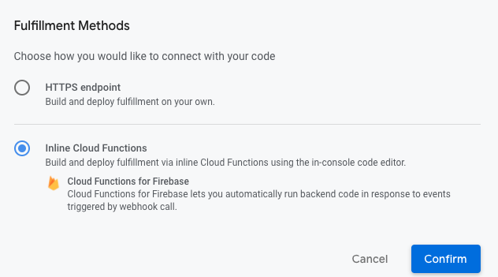
index.js の内容を次のコードに置き換えます:const { conversation } = require('@assistant/conversation');
const functions = require('firebase-functions');
const app = conversation({debug: true});
app.handle('greeting', conv => {
let message = 'A wondrous greeting, adventurer! Welcome to the mythical land of Gryffinberg! Based on your clothes, you are not from around these lands. It looks like you\'re on your way to an epic journey.';
if (conv.user.lastSeenTime) {
message = 'A wondrous greeting, adventurer! Welcome back to the mythical land of Gryffinberg!';
}
conv.add(message);
});
exports.ActionsOnGoogleFulfillment = functions.https.onRequest(app);Cloud Functions がフルフィルメントをプロビジョニングしデプロイを完了するまで数分待ちます。 コードエディタの上に "Cloud Function deployment in progress..." というメッセージが表示されます。 コードが正常に完了すると、メッセージが "Your Cloud Function deployment is up to date." に更新されます。
Node.js 用の Actions on Google フルフィルメントライブラリ を使用するフルフィルメントは、GoogleアシスタントからのHTTPリクエストに応答します。
前述のコードスニペットでは、lastSeenTimeプロパティに値があるかどうかをチェックすることにより、ユーザーが以前にアクションにアクセスしたかどうかをチェックするグリーティングハンドラーを定義します。 datetime値がある場合、メッセージはユーザーの戻りを確認し、変更された挨拶を生成します。 それ以外の場合は、新しいユーザーにオリジナルの挨拶を返します。
グリーティング関数を定義したので、ユーザーがアクションを呼び出したときにアクションがこの関数を呼び出すことをアクションが認識できるように、main invocation インテントでグリーティングイベントハンドラーを構成します。
新しいグリーティングハンドラーを呼び出すようにアクションを構成するには、次の手順に従ってください:
greeting を入力します。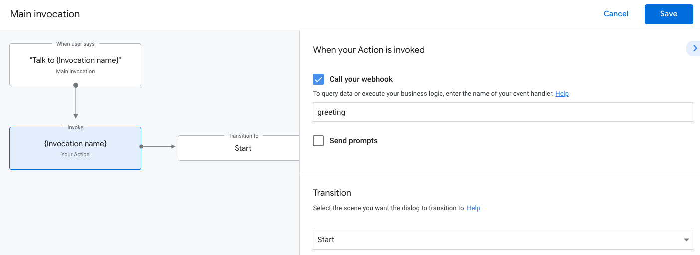
シミュレータでアクションをテストするには、次の手順に従ってください:
Talk to my test app と入力して Enter キーを押します。コードラボの前半でこのアクションをテストし、あなたはすでに新しいユーザーではないので、次の短い挨拶を受け取ります: "A wondrous greeting, adventurer! Welcome back to the mythical land of Gryffinberg!..."
これで Actions Builder を使った Google アシスタントの開発の基礎を知ることができました。
Actions on Google についてさらに学ぶために、以下の資料についても参考にすることができます:
Twitter @ActionsOnGoogle をフォローしてください。また、あなたが開発したものを #AoGDevs および #AoGDevsJa にてシェアしてください。